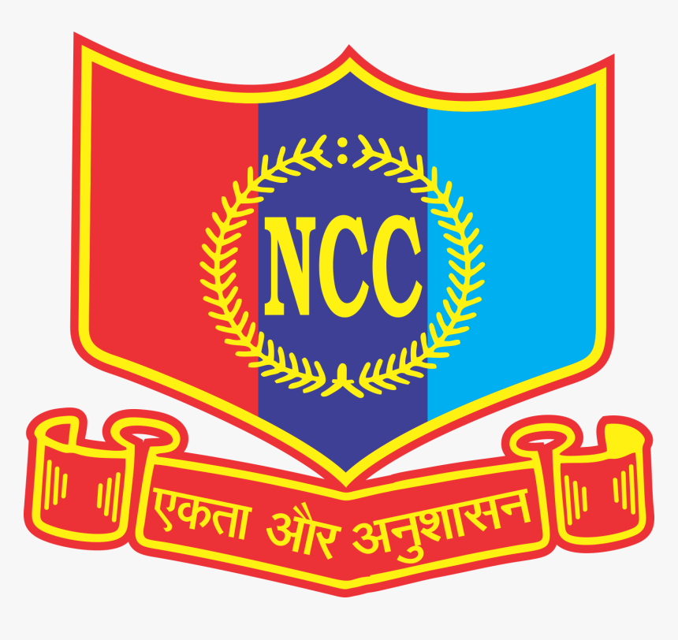

NCC generally stands for the National Cadet Corps, which is the youth wing of the Indian Armed Forces. Headquartered in New Delhi, it is the largest uniformed youth organization in the country and is open to school and college students on a voluntary basis.
The NCC (National Cadet Corps) is India’s premier youth organization that provides military training and leadership development to students while promoting discipline, patriotism, and community service.

One can join NCC by enrolling through your school or college unit, or via Open NCC if your institution does not have a unit, provided you meet age, education, and medical fitness criteria.
Joining NCC provides a comprehensive platform for personal growth, leadership development, physical fitness, and career advancement. It equips youth with skills, discipline, and opportunities that are highly valued in the armed forces, paramilitary, government, and private sectors, making it a strategic choice for students aiming for holistic development and professional success.
Source